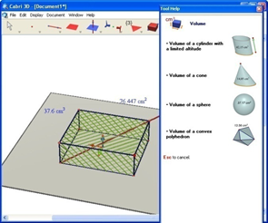
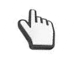
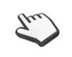
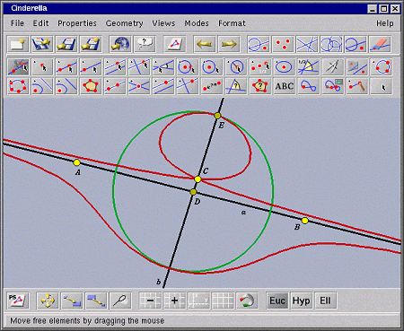

Vamos a eles:
1) CabriGeometre
O primeiro software da lista é um bem parecido com o geogebra e também tem uma versão tridimensional. Estamos falando do Cabri 3D.
EFEITO CÁPSULA DINÂMICA
“A tecnologia Cabri nasceu nos laboratórios do Centre National de laRechercheScientifique (CNRS) na França e na Universidade Joseph Fourier em Grenoble. O projeto teve o seu início em 1985, quando Jean-Marie Laborde, o mentor do Cabri, decidiu tornar a geometria bidimensional mais fácil de aprender e mais agradável de ensinar. Utilizar computadores para construir figuras geométricas abre um mundo inteiro de possibilidades, quando comparamos com os métodos clássicos de construção, utilizando papel, lápis, régua e compasso. Em todo o mundo mais de 100 milhões de pessoas utilizam o CabriGeometry II, o Cabri II Plus e o Cabri Jr. quer em computadores quer em calculadoras gráficas Texas Instruments. Nos dias de hoje, o Cabri 3D v2 traz a filosofia Cabri ao mundo 3D! Utilizando o Cabri 3D v2, pode construir, visualizar e manipular rapidamente todo o tipo de objetos tridimensionais: retas, planos, cones, esferas, poliedros... Pode fazer construções dinâmicas, das mais simples às mais complexas. Pode medir objetos, integrar dados numéricos e mesmo repetir o processo de construção de uma figura. Com o Cabri 3D v2 irá descobrir uma ferramenta notável para o ajudar a estudar e resolver problemas matemáticos.”
FIM DO EFEITOLembramos que qualquer dessas 3 versões do cabri são trial, ou seja, gratuito apenas para testes. Você pode fazer o download gratuitamente e testar qualquer uma dessas versões por 30 dias, para obter a licença para utilizar esse programa sem restrições você precisa comprá-lo. É uma ótima opção para o uso em sala de aula sendo que é similar ao geogebra.

Assim como o geogebra, o cabri 3D tem uma página destinada a materiais de apoio com demonstrações de animações do que pode ser realizado com os recursos do software. A página é Fonte: http://gallery.cabri.com/en/ que até o momento, só tem a versão em inglês.
Finalizando, o cabri é um excelente software que tem uma interface de fácil manipulação e compreensão, só é uma pena não ser gratuito, limitando assim o uso para quem possa pagar por ele.
2) Régua e Compasso
O aplicativo “Régua e Compasso” (C.a.R.), desenvolvido pelo professor René Grothmann da Universidade Católica de Berlim, na Alemanha, é um software de geometria dinâmica plana gratuito (você pode usá-lo e distribuí-lo para seus alunos sem pagar nada por isto). Ele está escrito na linguagem Java, tem código aberto e roda em qualquer plataforma (Microsoft Windows©, Linux, Macintosh©, etc).
EFEITO DEGRADÊ INÍCIO DO EFEITO:Diferentemente do que ocorre com a régua e o compasso tradicional, as construções feitas com o “Régua e Compasso” são dinâmicas e interativas, o que faz do programa um excelente laboratório de aprendizagem da geometria. O aluno (ou o professor) pode testar suas conjecturas através de exemplos e contra-exemplos que ele pode facilmente gerar.
Uma vez feita a construção, pontos, retas e círculos podem ser deslocados na tela mantendo-se as relações geométricas (pertinência, paralelismo, etc.) previamente estabelecidas, permitindo assim que o aluno (ou o professor), ao invés de gastar o seu tempo com detalhes de construção repetitivos, se concentre na associação existente entre os objetos.
Existem vários outros softwares de geometria dinâmica disponíveis no mercado. Apesar de algumas diferenças, o princípio de funcionamento é basicamente o mesmo, de modo que as atividades desenvolvidas com qualquer um deles podem facilmente ser adaptadas para o “Régua e Compasso”.
| Plataforma | |
|---|---|
| Microsoft Windows© |
Baixe e instale o arquivo executável car.exe (5.7 Mb). Para fazer com que o programa rode sempre em português, basta baixar o arquivo zirkel.jar (1.9 Mb) e salvá-lo no diretório onde o C.a.R. foi instalado (tipicamente C:\Arquivos de Programa\JavaCar ou C:\Program Files\JavaCar), substituindo o arquivo de mesmo nome já existente. Lembre-se que sua máquina deve ter a linguagem Java habilitada! Caso não consiga executar o programa após instalá-lo, é bem provável que este seja o motivo. Neste caso, baixe e instale o “Java RuntimeEnvorinment” (JRE) disponível no seguinte endereço (em inglês): ou, ainda, no endereço: http://www.professores.uff.br/hjbortol/car/programs/jre-6u5-windows-i586-p-s.exe. |
| Linux ou Macinstosh© |
Baixe o arquivo zirkel.jar (1.4 Mb). Se seu sistema estiver configurado corretamente, basta usar o gerenciador de arquivos e clicar duas vezes no ícone correspondente para iniciar a execução do programa. Se isto não funcionar, tente emitir os comandos abaixo em uma janela terminal: cdzirkel/doc/doc_en java -jar zirkel.jar java -cp zirkel.jar Zirkel |
O software Régua e Compasso é totalmente gratuito, é destinado apenas à geometria plana mas não deixa a desejar diante dos programas já citados acima. Faça um teste com esse software e você verá o quanto ele pode ajudar nos seus estudos. No sitehttp://www.professores.uff.br/hjbortol/car/tem tudo que você precisa saber para instalar e utilizar esse programa além de conter também material dedicado ao programa e exercícios. Então se você quer se tornar um expert em geometria dinâmica não pode deixar de conhecer esse software em português e gratuito.
3) Tabulae
O Tabulae é um programa de Geometria Dinâmica plana inteiramente desenvolvido na Universidade Federal do Rio de Janeiro (UFRJ).
EFEITO TABELAS ALTERNADAS COLORIDAS INÍCIO DO EFEITO:A aprendizagem em Geometria e em outras sub-disciplinas da Matemática pode ser aprimorada pelo uso do Tabulæ, pois neste programa de computador o usuário tem ao seu dispor uma construção geométrica precisa e interativa, algo inatingível antes do aparecimento desta classe de softwares educativos: todas as instâncias de uma determinada construção são alcançáveis pelo simples expediente de "arrastar" (com o mouse) um elemento apropriado dessa construção, visível na tela. Como as propriedades geométricas da construção se mantêm e são visíveis durante o processo, isto incentiva o aluno em atividades exploratórias e investigativas com respeito a essas mesmas propriedades, o que faz dele uma ferramenta poderosa para o ensino e mesmo para a iniciação em investigação científica em Matemática.
O Tabulæ apresenta uma característica singular dentre os demais programas de Geometria Dinâmica do mercado: a sua capacidade de apoiar atividades colaborativas através do compartilhamento de objetos matemáticos via Internet ou através de redes locais. Toda a comunicação é baseada em um protocolo de comunicação aberto e bem definido, baseado na linguagem XML.
Professores que pretendem aplicar estratégias didáticas colaborativas em cursos à distância ou em atividades realizadas de laboratórios tem agora mais um ferramental para fortalecer os modos não-tradicionais de atuação pedagógica para os estudantes aprenderem e entenderem os conceitos matemáticos.
O Tabulæ é um software de Geometria Dinâmica que tem como finalidade ajudar na transmissão cognitiva. Com isso, podemos vê-lo como um instrumento pedagógico para Educação Matemática, uma vez que suas inúmeras ferramentas possibilitam compartilhar conhecimento em tempo real (via Internet) e construir os elementos geométricos passo a passo, por exemplo.
Aos moldes da educação hoje, em que temos tentativas de aproximar cada vez mais a realidade do estudante com o conteúdo acadêmico, o Tabulæ se apresenta com uma ferramenta de auxílio para essa atualização. Importante destacar também, que o Tabulæ propicia a interdisciplinaridade: podemos trabalhar conceitos de Matemática e Informática em concomitância, caso queiramos.
Não podemos esquecer também do contexto histórico, em especial o científico que estamos vivendo: computadores, tecnologias, ruptura de fronteiras geográficas. Significa dizer que é necessário que o conhecimento também se modernize, para isso, precisa-se aprimorar as técnicas pedagógicas. Para atender a atualização dessas técnicas é necessário criar ferramentas que condicionem a transmissão do conhecimento, mas que priorize a qualidade do conteúdo, ou seja, propicie uma educação de ponta. Nesse sentido, temos o Tabulæ, que permite transmissão do conteúdo via internet e de forma construtiva. O que significar dizer que mantém a exploração do raciocínio do usuário e do espírito investigativo.
FINAL DO EFEITO:4) Poly
Poly é um programa shareware para explorar e construir poliedros. Com Poly, é possível manipular sólidos poliédricos no computador de uma variedade de maneiras. Versões achatadas (redes) de poliedros podem ser impressas e, em seguida, cortado, dobrado e colado, para produzir modelos tridimensionais.
EFEITO TEXTO FLUTUANTE INÍCIO DO EFEITO:Poly é usado em escolas e lares de todo o mundo. Poly oferece um Inglês, um holandês, um espanhol, um francês, um dinamarquês, um alemão, um italiano, um polonês, um húngaro, um estónio, um chinês tradicional, e um coreano interface.
FIM DO EFEITO
5) Cinderella
Queremos apontar as principais características deste software. Cinderella...
EFEITO BT FLUTUANTE INÍCIO DO EFEITO:
FINAL DO EFEITO.Assim como a janela de visualização, a barra de ferramentas também ganhou novos ícones direcionados ao estudo da geometria espacial.

Vamos a eles:
EFEITO DEGRADÊ INÍCIO DO EFEITO:
Permite que você trace uma reta paralela a um plano. Para isso selecione um ponto e após selecione um plano e uma reta perpendicular ao plano passando pelo ponto selecionado será criada.
Responsável:
Centro de Educação a Distância do Ceará - CED